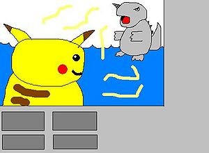

Netbattle
 De: La Frikipedia, la enciclopedia extremadamente seria.
De: La Frikipedia, la enciclopedia extremadamente seria.
De la serie Videojuegos:
Netbattle

| Desarrollado por:
|
NISU inc.
|
| Distribuido por:
|
¿De que, de droga?
|
| Diseñado por:
|
Niño drogado de 5 años
|
| Motor
|
V8 3.5 de 500 yeguas
|
| Género(s)
|
Macho
|
| Fecha de lanzamiento:
|
560 d.c.
|
| Modos de juego:
|
modo asesino activado
|
| Requisitos:
|
Ser un Pokefriki
|
| Disponible en:
|
chup land
|
| Formatos:
|
Cartucho de tinta
|
| Edades:
|
mientras sepas apretar el botón de tu nintendo...
|
| Puntuaciones:
|
Mierda Consolas: 20/500000
|
es mejor digimon
 Captura de una ardiente batalla en la cual pikachu apunta al cuerno de Rhydon para noquearlo, una tactica muy comun entre los expertos netbattlers
Nettbattle es un simulador de peleitas pokémon originalmente diseñado por los japoneses en su intento de dominación mundial a través de epilepsias, siendo desechado al poco tiempo de ser empezado el proyecto. Desafortunadamente un gringo friki llamado Tvsian, en una vorágine de envidia y maldad robó este programa para utilizarlo con fines de lucro. La primera civilización de netbattlers se alzó en el servidor de Masamune (y no en Smogon como el primer wn que escribió este artículo) cuando aún no existía la famosa lista de servers que aún demostraba la poca popularidad del jueguito. Gringos, brazucas, latinos y toda comunidad que cualquiera se pudiese imaginar andaban juntos en un solo lugar. Más tarde, se irían expandiendo más servers como los del mano derecha Allmard y el panda Chino Mana Lugia. Todo era paz y calma porque había amistad y reinaba la cordura, ayudándose unos a otros, hasta que de a poco la intolerancia sobre el idioma español comenzaba a caldear ánimos de racismo entre los pobres latinos. Iban proliferando junto a los creadores los cabecillas Vineon y Chaos que más tarde se llevarían la gloria al crear Blue Heaven -más conocido por todos como el tirano e inexpugnable Smogon (que cambiaría de nombre tras unas décadas)-, gozando de la aparición de la lista de servers que contribuyó a que muchos n00bs, que no se animaban a bajarlo por su escaso coeficiente intelectual a usar el programa, entraran a cambiar el rumbo de tranquilidad.
Periodos de la Historia del Netbattle
- La creación: Masamune bajo las órdenes de su amo Tvsian hostea el primer server conocido bajo la ip masamune.zapto.org, en la que se lleva toda la gloria de los users que comienzan a poblar el programa, lleno de bugs y fallos por todas partes. Esto no hace más que acrecentar el desafío de los creadores quienes usan como conejillos de indias a sus habitantes para someterlos a sus instintos básicos en la búsqueda de la perfección. Sólo un puñado de ellos siguen siendo fieles hasta que van mejorando su performance y comienza la era de la reproducción desenfrenada con más gente con sed de poder como Allamrd, Mana Lugia y el neonazi Vineon, quien organiza la recopilación de fotos comprometedoras de sus súbditos en poses más que provocativas para alimentar sus deseos salvajes.
- Consolidación de los gringos como los reyes del universo: Este periodo se caracteriza por la llegada de la lista de servers y la aparición del coloso Blue Heaven que contaba con una sólida fuerza militar que mantenía a raya las continuas muestras de disconformismo de las masas emergentes clamando por expresarse libremente. La tercera generación estaba próxima a colisionar en un momento histórico, en el que la invasión n00b no dejaba de avanzar. Fue cuando Blue Heaven pasó a llamarse Smogon, nombre que remite a la tiranía en su máxima expresión. La constante lucha de los servers rebeldes contra el imperio Smogon por una total desorganización en el sistema social, con un decaimiento del pokédolar comparable al del jueves negro, hizo rasgar en varias partes el mapa del universo dispersando a los n00bs por los más variados y remotos lugares. La peste y la hambruna reinaron durante muchas décadas, hubo revueltas sociales que hicieron que el Innombrable esparciera su influencia política. En este periodo destacan los esfuerzo de los brasileños uniendo sus voces y crearon en el año 112 d.A. el “BOAH” arma spammeante súper efectiva contra Smogon. Uno de los grandes líderes de esta era, fue Silver Carrot, el dictador que asesinaba a los clanes numerosos llenos de n00b. También pateaba a cada usuario que le derrotaba y lo llevaba a la hoguera. Otro de los grandes dictadores fue Eevee Trainer, este dirigió sus tropas en Smogon y cada guerra que perdía la inmensa parte de la población sufría castigos. Al haber mucho usuario sadomasoquista y homosexual, un pequeño usuario llamado Pedro, llegó a derrotarle más de 1 vez para sufrir su castigo, hasta que murió poco después en una de las rabietas de Eevee Trainer, que sin querér le rebanó la tapa de los sesos. Sin embargo, revivió gracias a la ayuda de Atsumu, que dándole un extraño brebaje formado con flores, azúcar y muchos colores volviese más homosexual que nunca.
- Primeras manifestaciones hispanas: Como los n00bs iban poblando el universo netbattleano, los hispanos a la par también se contaban en un buen número y querían alejarse de la tiranía que ejercían los gringos contra ellos para poder hacerla suya con sus propios esclavos. Así fue como coexistían diversos y pequeños lugares que albergarían con orgullo el sentirse latino. Entonces servers como el perucha PPL,Super Liga alojaban con alegría a los felices n00bs que se daban cita para entablar batallas y conversaciones incoherentes sin tantos tapujos pero a la deriva cuando no encontraban sus queridos servers en la lista presa de los ordenadores que no estaban disponibles por orden de sus mamitas y papitos.
- Marea y su ejército hispano: Al desarrollarse la tecnología en los países mas pobres, también se desarrollo el interés por ingresar a la guerra contra Smogon para lograr ganancias monetarias. Así en el año 157 d.A. una junta iniciada en el ex antro de Atomic pokémon deciideron terminar con el supuesto despotismo y la dispersión de camaradas y creó el primer Server Hispano llamado Marea, desarrollándose la religión “Maereista” en el seno de esta comunidad de hispanos, que adoraban a Selene, un bot que saludaba a quien se apareciera por el Server. Todo era júbilo, orgías desenfrenadas, libertinaje desmedido que celebraban la obtención de hordas y hordas de n00bs hispanos que deliraban por entregarse al placer de la comunidad. Sin embargo, la alegría duró poco, ya que el mismo poder que había creado a Marea terminó destruyéndola presa de su ambición por ser un territorio democrático y libre que no pudo soportar las guerras internas llenas de envidia y rencor. Fruto de la llegada de los intrusos del norte Onion y Chaos que quisieron meter su nariz gringa en el proyecto sabiendo del poder latino, y un server plagado de lag 24/7 que prestaba el caballín Pegasus acabaron con los sueños de una comunidad grande que se dividía entre fieles y rebeldes reprochándose ansias de poder, corrupción, sexo, drogas y rock & roll.
- Un impasse que buscaba la sucesión: La caída inminente de la masa mareísta demostró la peor expresión del ser humano en una búsqueda de popularidad que pudiera recoger los habitantes que habían quedado desamparados sin hogar en el universo netbattleano. Diversos y ridículos servers buscaban llenar un vacío que jamás pudieron porque eran sólo n00bs en pañales que apenas sabían hacer fuerza para ensuciarlos. Los vanos intentos por resucitar a Marea no consiguieron atrear a las masas, los procreadores se habían marchado para siempre con sus sueños. No obstante...
- A escena Cemzoo: ...los ultrafieles esclavos de Marea que llevaban en su sangre la expresión [cz] se aglutinaron en su fortaleza para organizar su propia escuela aprovechando la hondanada de gente sin hogar que pudiera sumarse a ellos y su maquiavélico plan de dominación. Fue así como surgieron desde sus adentros con los mismos presceptos reinantes en la caída Marea para así mostrarle al universo que la comunidad hispana seguía viva.
- La competencia de Stats: Los continuos errores de reinado, vejámenes a las más nuevas clases sociales y a un egocentrismo que llevaba tatuado cada miembro, se le sumó el arribo de una nueva civilización que succionaba y sumaba más y más adeptos con su bandera del desenfado y aires de cambio. Era el server de Pokémon Stats que fue trayéndole dolores de cabeza a los cemzianos que iban viendo cómo se les escapaba la comunidad ante las reiteradas equivocaciones que ya había experimentado Marea en tiempos añejos. Entre los que comandaban esta nueva comunidad se advertían grandes popes de la Marea que vislumbraron mayor futuro en este territorio y que con la continua realización de torneos y demás eventos frívolos atraían a mayores n00bs que iban consolidando esta población como la más destacada. No obstante, los altos mandos de Cemzoo no se rindieron y organizaban una y otra vez diferentes estrategias para intentar volver a ser lo que soñaron, con peleas internas inconcebibles expuestas en su propia fortaleza a la vista de todo el universo latino.
- La muerte del Net y la conolización de Shoddy: Al salir la cuarta generación, miles de Netbattleanos pedían que su nuevo sistema de juego se adaptara al Netbattle. Pero TVsian no podía satisfacerlos por andar ocupado en sus labores cotidianas como actor de pornografía gay . su única excusa era "YO TENGO UNA VIDA, NO TENGO TIEMPO PARA ANDAR ESCUCHANDOLOS, MONTON DE SPAMMER!" Fue entonces cuando la comunidad Netbattleana empezó a dejar vacío los Servidores, pues Smogon necesitaba la cuarta generación en un simulador lo más pronto posible. Aprovechando esto, un hermafrodita que respondía al estúpido nombre de Colin, y secta de esclavos sexuales iguales que él empezaron a desarrollar un nuevo simulador compatible con la mecanica de la cuarta generación. Fueron años de trabajo y la gente ya se cansaba de esperar, pero entonces salío Shoddy Battle que después de unos meses unió fuerzas con Smogon. Todo era júbilo y gracia, el Net murió y ahora el Servidor de Smogon en Shoddy los tenía a todos, de 250 hasta 400 usuarios en su servidor, lo que traía Lag y desesperación, todo parecía perdido para el Net.
- El nacimiento de Supremacy: Luego de varios años, un aparecido bajo el nombre de Baylef00, después de tener varías orgías con Tvsian éste le cedió el Source Code del Netbattle para terminar su proyecto, el imbécil con la ayuda de unos cuantos Nerd, programó con una infinita de Bugs la cuarta generación en Netbattle, y la lanzó bajo el nombre de Supremacy, la poca gente que se animó a probar el proyecto terminaron vomitando al ver semejante porquería llena de Bugs y Crash, mientras Smogon y Colin se burlaban, Bayleef00 no se daba por vencido y seguía haciendole Fix al programita, hasta que luego de unas décadas ya no tenía muchos Bugs, Colin y su manada de Tiranes, no le prestaban atención en lo más mínimo al Netbattle, Smogon se aseguró de no dejar una huella en, su server que había cerrado hace un siglo atrás, las amenazas a los Users de Smogon que se atrevieran a usar Netbattle, y unas cuantas estúpidas reglas a las que sólo los más nOObs y un que otro retardado obedecían.Unos cuantos nostálgicos y imbéciles que no podían entender un carajo en el Shoddy debido al montón de textos y Spammers en el Chat principal(Al cual no se les podía preguntar nada o interrumpir, por una regla de Smogon)se fueron llorando al Netbattle donde pueblan los Noobs y los Smogonianos que ahún juegan las viejas generaciones.
- Pokemon Online: A finales del apocalíptico año 2010 apareció un nuevo simulador que completaba el triángulo amoroso de los jugadores frikies competitivos. Programado por unos desocupados linguistas y encabezado el proyecto por un tal «coyote» y su amigo el correcaminos nació Pokemon Online, el nombre más original jamás visto en un juego en línea. Tal era el tiempo libre de los programadores que se ocuparon de copiarle cosas al shoddy y al net volviendolo una fusion de ambos al más puro estilo DBZ, y su capacidad adictiva era del 110%. Con el paso del tiempo su popularidad se fue acrecentando hasta hacer mierda todo y poner patas arriba el mundo competitivo como se conocía, y todos los nerds fueron emigrando a este simulador llenando los servidores de newfags y viejos de la old school. Hoy en día es el único simulador usado, incluso por la iglesia Smogon que acabó tolerando la herejía de sus usuarios y no causó otra cruzada en contra de los traidores. El maldito simulador funciona hasta en móviles, lo que da a entender que desde el principio fue desarrollado para ser un éxito, veáse la película avatar o el libro del código da vinci, por poner varios ejemplos de mierdas que le gustan a los títeres capitalistas.
- La actualidad:: Los ataques a las vulnerabilidades descubiertas hacia el universo netbattleano han puesto de soslayo que su muerte es inminente, sumado a una inactividad crónica de sus creadores que ya no pueden atendernos por estar casados, con hijos, o prófugos de la justicia y otras cuestiones que atender. Smogon se ha muerto como profetizaban los astros ante tanta tiranía, hackeos y una fijación irrisoria de que la creación de un sucesor del NetBattle podía ser posible. Su lider Chaos está inmiscuído en sus proyectos ultrasecretos de medicina nanonuclear que le posibiliten un reacondicionamiento de su masa grasosa. Pokémon Stats está muerto como se predijo, los pocos Latinos y Españoles se mudaron a server gringos, provocando así su muerte poco a poco. De la nada surgieron más servers Hispanos pero por ser RPG no llamaron la atención de nadie excepto ellos mismos. Muchos seguidores de éste programa se fueron a su amado Smogon, quién luego de varias decadas unió fuerzas con el simulador Shoddy Battle, ahora Netbattle es sólo la sombra de lo que ya fué, muchos prefieren Shoddy a Netbattle, o jugar Via-WIFI, pero unos pocos ahún deambulan por los desolados servers, esperando que esos días de lujuría vuelvan otra vez.
- Actualiad Parte 2: Con el surgimiento del pokemon showdown, Smogon demostró que la antigua profecía de su reinado eterno era, aparentemente cierta. Es el sueño de Smogon hecho realidad: todos los ochorrocientos pokemon e la generacion 6, incluyendo al hijo no reconocido de hitler, juego online constantemente actualizado e idioma ingles. A pesar de todo, la epoca dorada del Netbattle todavía es recordada (Principalmente por gringos que dicen que era una mierda).
Usuarios y Clases Sociales
Según Marx la historia siempre presenta una lucha de clases, el netbattle no es la excepción. Comenzando desde la más alta se encuentran los Popularities, los Desconocidos y los Noobs, pasando por otras que aunque de menor relevancia por no presentar los niveles de frikismo homosexual de las primeras, no dejan de ser fundamentales para comprender la merienda de negros que es el Netbattle.
- Popularities: La high society del net, comúnmente se los ve hablar por el Chat principal acerca de sus relaciones amorosas homosexuales, en estos casos el vencedor es quien hace mayor gala de su homosexualidad. Complementan su falta de gracia en la vida real haciendo de payasos para los demás popularities y su falta de autoestima jodiendo a las clases inferiores.
Ademas usan los comandos del dinero para estafar a todo noob que aparezca.
- Desconocidos: Son los que pasan sin pena ni gloria, desconocidos totales, marginados sociales, comúnmente tratados como noobs por los popularities con la típica frase: “¿Quién es (inserte nick aquí?)”, con esto demuestran su desapruebo por quienes no siguen sus reglas sociales. Ejemplos de estos no hay ya que son desconocidos.
- Noobs: Quizá la clase más odiada de la historia de la humanidad. Conforman la mayoría de la población del net infestando cada rincón de los servers con sus estupidas reglas como: “no cambies de pokemon”, “no snorlax curser”, “no caterpie ¬¬”, "no bliss". Generalmente esta especie se apoda con nicks relacionados con la oscuridad y las sombras.Se les puede reconocer por hacer innumerables preguntas por Chat principal, al no estar familiarizados con la jerga netbattlera. Usan ubers, legends e items de hax (Quick Claw, Bright Powder) indiscriminadamente y se las dan de sabelotodos ofreciendo trucos para las versiones de game boy advance que a nadie interesan. La mayor pasion de estos especimenes son los torneos Challenge Cup que se organizan comunmente en el server, llegando ser intolerable la jactancia que se adjudican luego de ganar una pelea bajo este modo de batalla. En las vacaciones de verano es cuando llegan las plagas de 30 o 40 n00bs a los servers, entran todos al mismo tiempo diciendo que terminaron las clases,que pueden estar todo el día y se vician molestando,haciendo BOAH y muchas cosas más que no te dejan vivir. Se dice que son como los gremlins,se multiplican por la noche. Cuando luchas contra ellos prohiben todo y dicen que juegas mal,pero nadie les hace caso,ya que es una especie de maldición que usan para bajarte la moral y que te suicides.
- Mamones: Pertenecen a la especie Lamelidos Genitaculis, se les pueden ver comúnmente en el server entrando a peleas sin disallow, y elogiando falsamente las jugadas de netbattleros de mayor jerarquia en el server, con la única intención de copiar movesets y equipos. Se reproducen por sexo oral y luego de algunos dias tienen sus crías las cuales continuan con el circulo vicioso de la mamonería y mediocridad.Cabe decir que siempre estan al asecho en busca de un nuevo organo receptor.
- Haxeros: Estos maricones son lo peor después de los n00bs. No importa cuánto te esfuerces haciendo un equipo blindado, no importa cuánto mejores tus habilidades predictivas o qué carajos hagas, no tiene caso que lo intentes pues nunca podrás derrotar su suerte. Siempre que creas que tienes controlada la batalla de alguna manera te destruirán con su hax infinita. 15 críticos seguidos, veinte turnos de parálisis, cuatro ubers en las CC, 13 flinchs y cosas por el estilo es lo único que llegarás a ver si te enfrentas a uno de ellos. Cuando peleas con ellos generalmente te vas a rendir.

Tipica reacción ante un haxer
- Bitchies: Creídos y arrogantes, son aquellos que a pesar de recién ingresar a la sociedad netbattlera ya se sienten que todo el mundo debe chuparle las medias y obedecer sus ridículas y sin sentido reglitas de cuarta categoría, seguir fielmente sus mandatos y nunca, jamás replicarles. Esta especie, aunque intrínsecamente relacionada con los n00bs, se diferencia de estos últimos por tener una mayor y estable permanencia en el NB nunca saliendo del nivel de rookie con el que se mantienen a lo largo de su carrera. Entre sus reglitas están:
- No UBERS o Legends(y ellos los usan)
- No Skarmbliss (Este duo te saca de quicio, pero tampoco es invencible)
- No Curselax
- No Magikarp
- Simpaticones: De descendencia burlona y molestosa, desde que entran a un círculo vicioso, buscan a su presa para denigrarla completamente. Sus bromas o desvios de su moral siempre crean conflictos o traen desastres; quieren llamar la atencion de los demas haciendose los malos, cuando se les pilla en el hecho, se hacen los inocentes y se escapan de sus problemas.
- Supuestos reyes del mundo: Desde pequeños han jodido a la sociedad y son muy molestos. Varios mods y admins estan incluidos en esta clase social debido a que abusan de su poder y se creen superiores al mundo entero. Suelen estar en manadas luchando con n00bs o simplemente haciendose el r0x en el chat principal. Se dice que son como los n00bs: fueron creados para bajarle la moral a los integrantes de otras clases pero con la diferencia de que las humillaciones que éstos propinan son más difíciles de superar y hechas a toda conciencia. Lo más recomendable es no irritar a ninguno de los SRM pues a la más mínima oportunidad que tengan de cobrar venganza, obligarán al osado a ser su esclavo sexual y bailar la Macarena de cabeza por el resto de su vida, entre otras torturas. Se creen guays por pertenecer o ser lideres de clans que no conoce ni Dios.
- Rudos: Categoría a un netbattle en el que solo había "wapos" y "malos". Las caracteríticas de los rudos es que son wapos, son machos, escuchan música muy r0x, juegan ofensivamente, insultan y se reprimen sexualmente frente a los demas, suelen ser muteados y baneados en todos lados, son haxeados, juegan al WoW con la horda etc...
- Parejas Amorosas: Son aquellos usuarios que se conocian jugando al net y los pendejos se enamoraban.
¿Juegan nenas a este juego?
Algunos se preguntaron si en este juego juegan tías. La respuesta es sí, juegan algunas.
|
|
 Shooter Shooter
 Terror Terror
 Velocidad Velocidad
 Rol Rol
 Estrategia Estrategia
 Aventuras Aventuras
 Fight! Fight!
 Clásicos Clásicos
 Deportivos Deportivos
 Aventura gráfica Aventura gráfica
 Novela visual Novela visual
 Personajes de videojuegos Personajes de videojuegos
|
Autor(es):
- Krusher
- Nexo
- Ka0x
- Pelon Panza Alegre
- GrimAngel
- Apocalypsus
- Muerte85
- Gashetitas
- Asdf
- Polillita
Frikipedia 2005-2016, Licencia
GFDL 1.2 - Extraído por FrikiLeaks